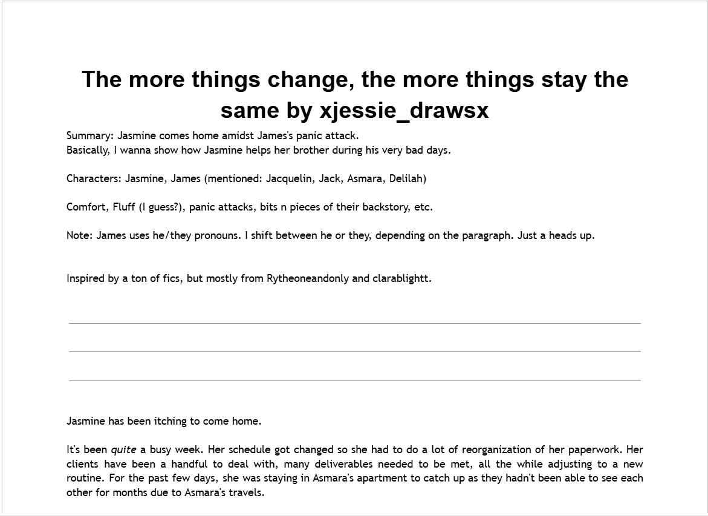
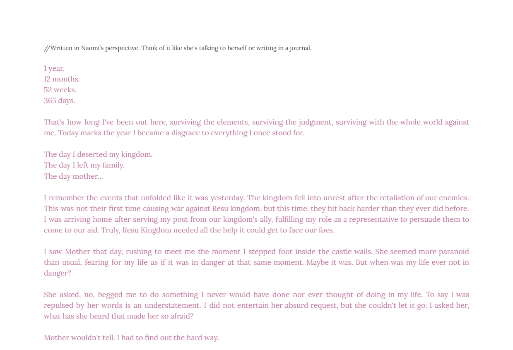
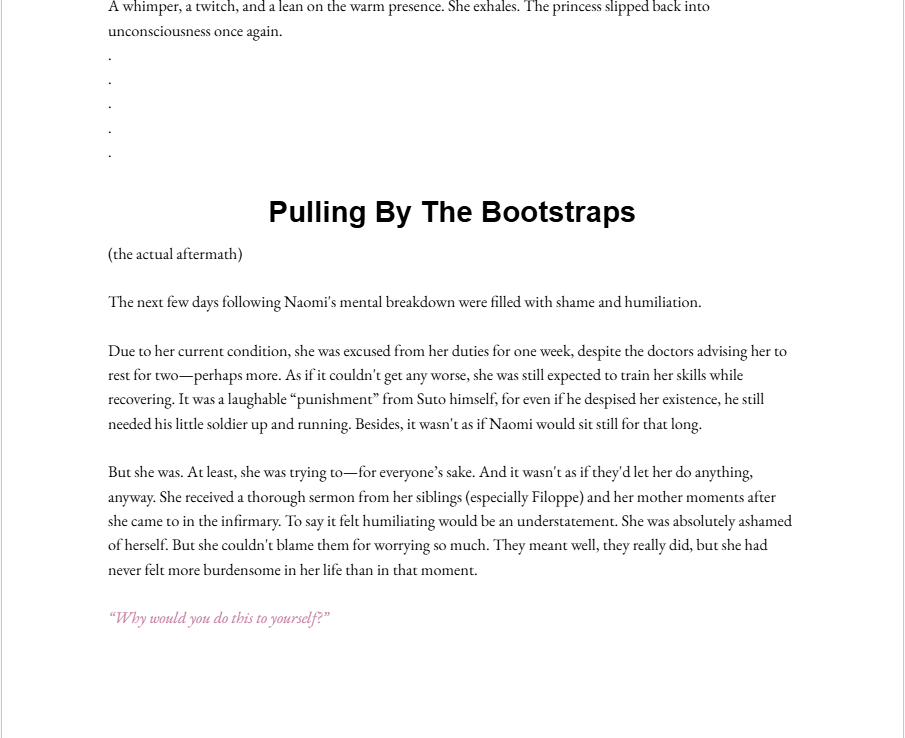
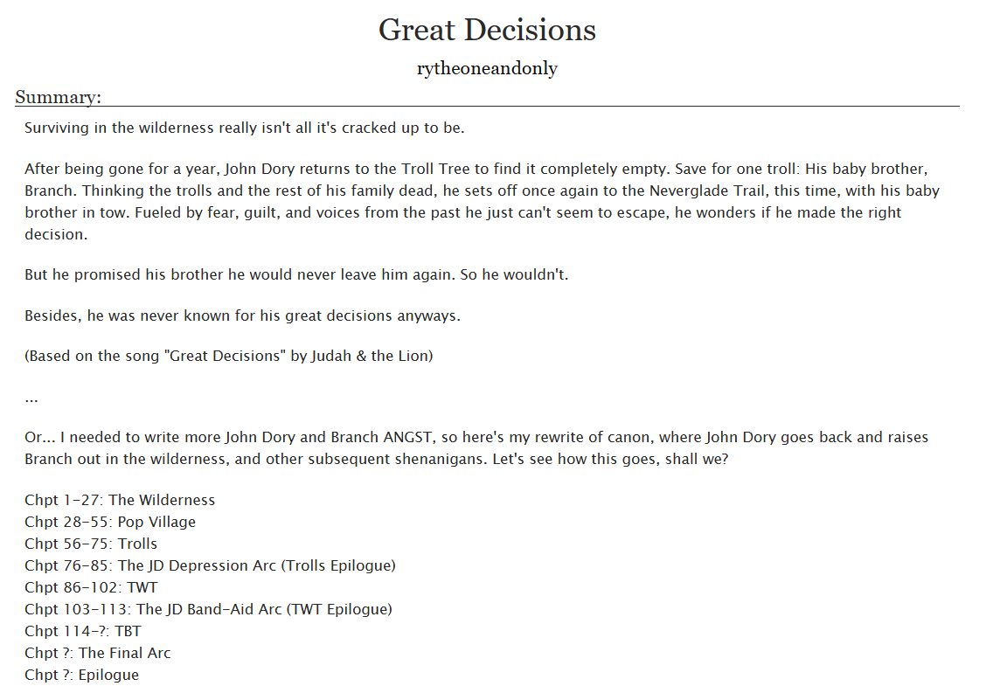
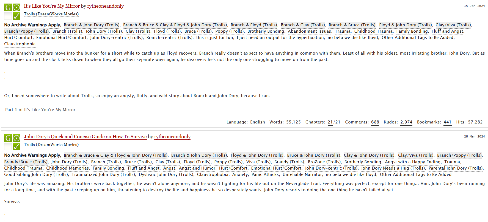
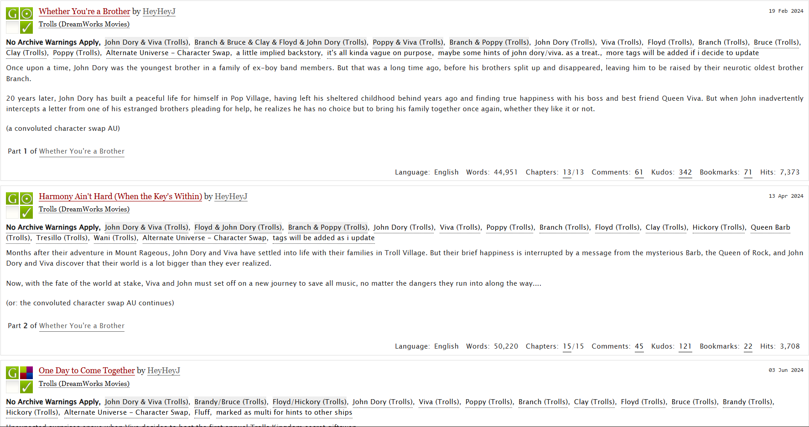
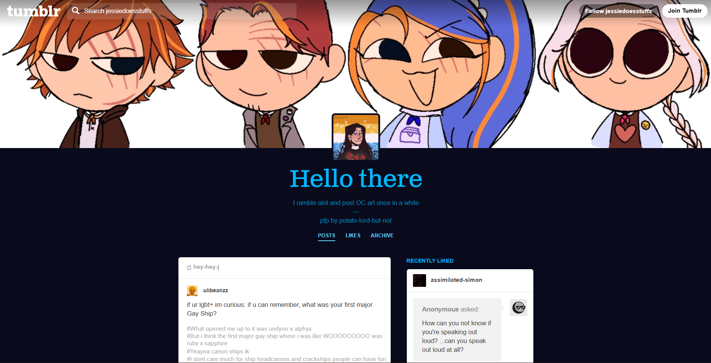
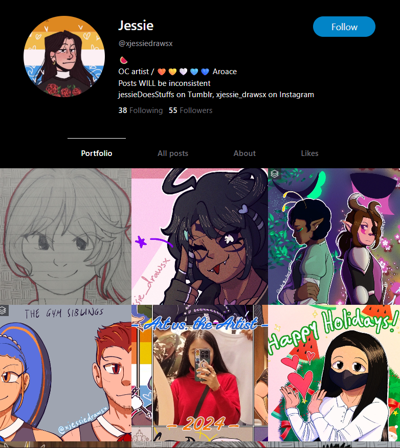
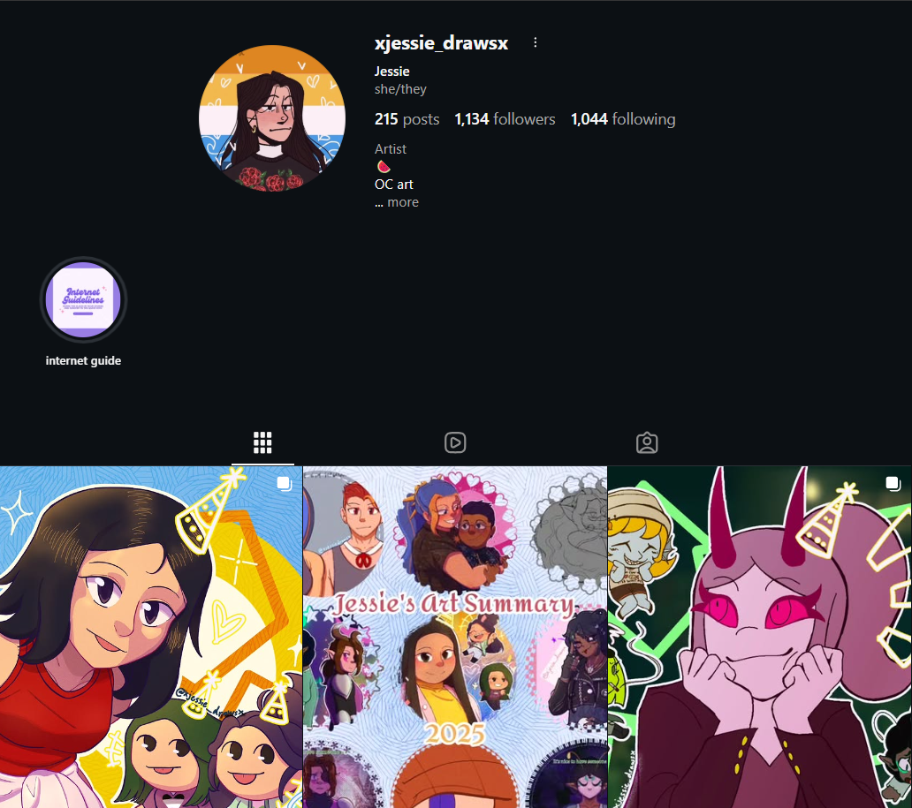

My first try at writing and storytelling.

A more refined attempt at character expression.

My latest work, featuring a character made by a friend.

An amazing piece of literature to read, and one of my current favorite fanfics.

A series of reads I keep coming back to.

A fun what-if series that I enjoy rereading once in a while.

Where I post sometimes and reblog random content.

My art-focused platform, made to look like a social media art portfolio.

Where I'm most active. Check out my recent artworks here!